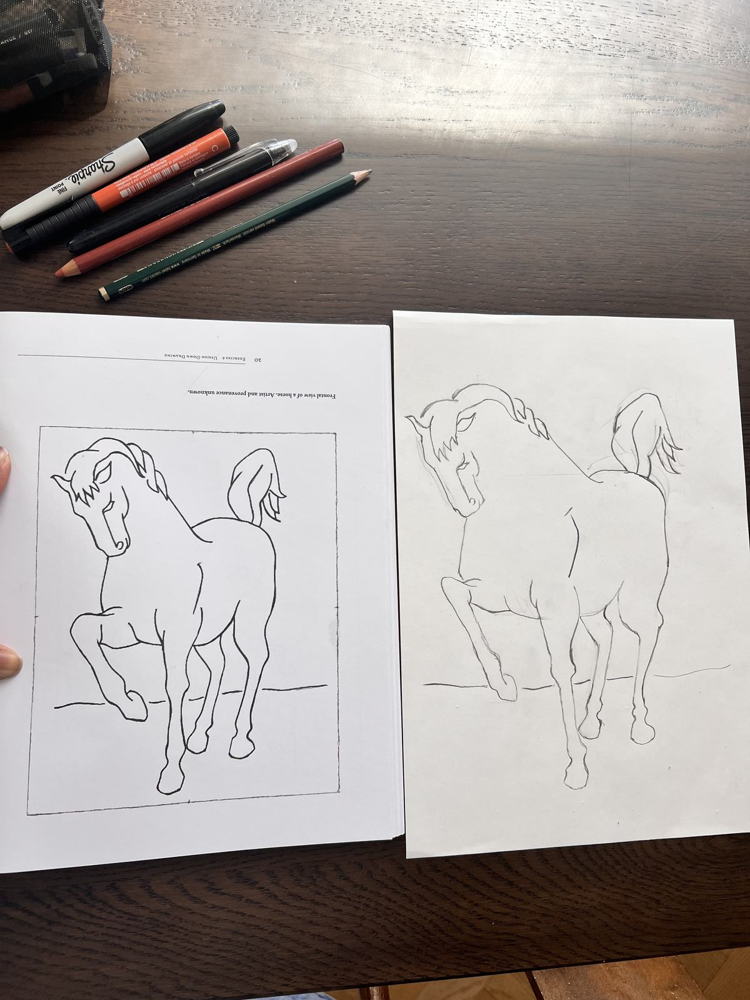
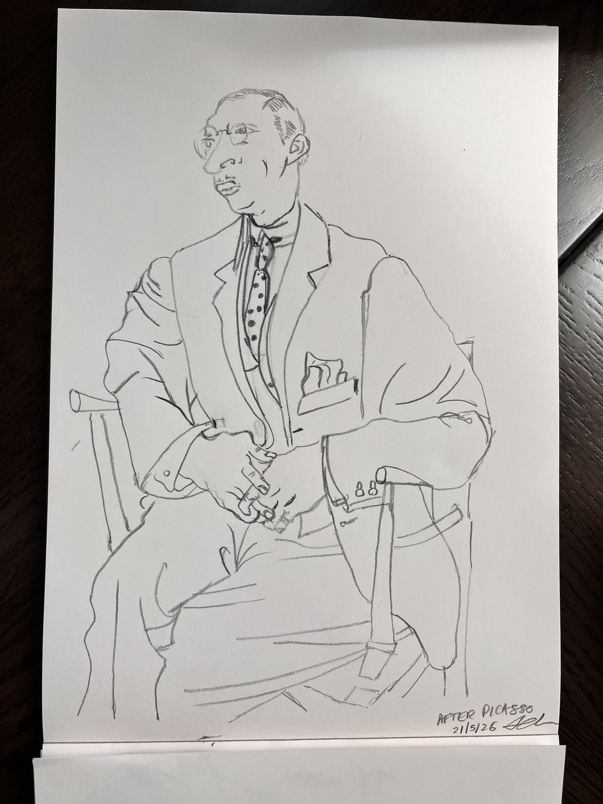
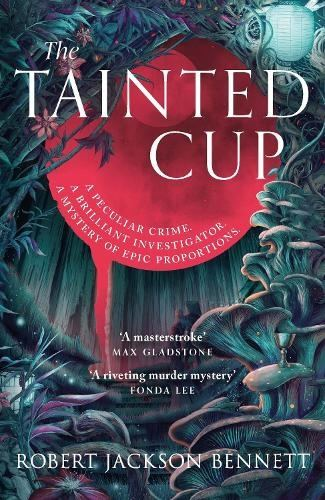
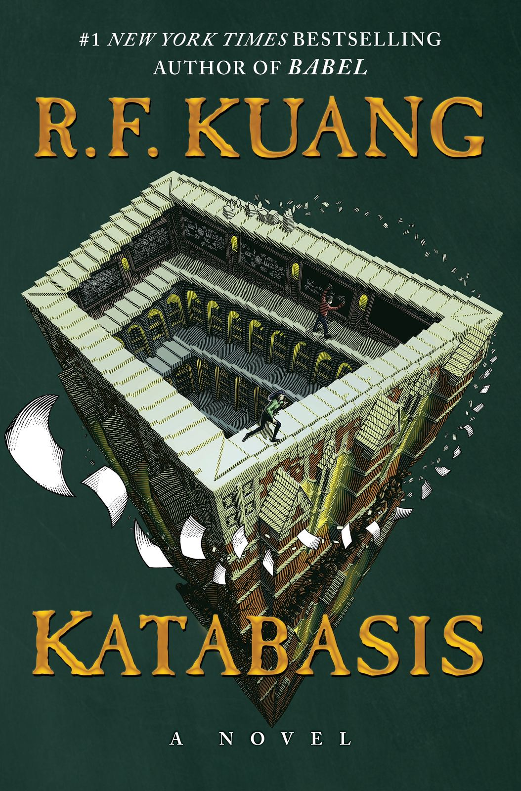

We are officially past the 12 week mark of writing these - can you believe it?
I am wondering what the next 12 weeks could look like. I had originally planned to do a bit more video content, so that could be something to explore. I noticed that I have unconsciously stopped including photos of my face in the last few weeklies. The hiding instinct is strong - but noticing means I can shift it.
Another thing to explore - organize some of the content in these weeklies in a way that I can share more broadly - whether that's a digital garden or something else.
The next 12 weeks will also include a transition back to working full time. Feels even more important to have a way to reflect on how my creative practice evolves when my schedule isn't fully in my control.
Speaking of back to work - the imminent return to work has got me feeling extra reflective about the past few months of recovery and creative practice. I'm torn between enjoying the last few days without worrying about the return to work, and dipping my toe in with work-related writing or a session with my coach. More on this next week.
I spend a lot of time running away from the now.
In Bird by Bird, a very interesting book on writing by Anne Lamott who talks about inhabiting the now-now rather than the last now or the next now.
I spend a lot of time in the next now. The pull of imagined futures, where I will do great and wonderful things, is usually pretty strong.
The abandoned tasks of the now-now lie all around me like anxiety-inducing Lego blocks. Each a piece that could have been useful and even fun - but is now a near-lethal stepping hazard. No matter - I am very practiced at stepping around them. So no lessons will be learned.
I've noticed something about my drawing practice. My subconscious brain is very quick to dismiss my progress - and it finds VERY creative ways to do this.
I did these upside down drawing exercises (the source image you are drawing is turned upside down)


They turned out really well which is the point the instructor is making about how drawing well is something anyone can do if we let our loud, verbal left-brain fade away so that the creative and intuitive right brain can take over to do the drawing.
I was recently showing my latest drawings to a friend, but I didn't somehow feel I could claim these upside down drawings as my drawings - my brain seems to think I've cheated somehow. We did trick the left brain but that doesn't make the drawing any less valid. But even as I type this, presumably with the help of the verbal, analytical left brain, I don't really believe that.
I realize my brain (and likely yours) does this whenever we have just done a hard thing. It finds a story to tell.
‘Beginners luck’
‘Happy accident’
‘Just a fluke -I’ll never be able to do that again’
‘ Maybe it wasn’t a hard thing to do in the first place’
‘ I’m sure loads of people can do this’
How many times have we said things like this to ourselves until the excited little kid waving celebratory pom-poms just deflated and trudged away with her shoulders slumped?
Maybe we need to train our brains to do the opposite for a while.
Breakout the celebratory pom-poms for everything.
Made a great omelette? Pom-poms.
Took a shower when you had a migraine? Pom-poms.
You drew something - put your focus, time and care into it? A whole Mexican wave of pom-poms.
Being alive and being able to make beautiful things is enough reason to celebrate - isn't it? Even more true when pain and illness sap our energy and our sense of who we are. Something I am feeling a lot at the moment after 6 straight days of migraines.
These pom-poms might sound like those participation trophies we scoffed at as kids.
But the more I grow up, I realize that talent is overrated and trying is underrated.
Trying over and over is the hard part. You build the talent along the way - bit by bit.
So we show up and try. Because the pom poms are waiting.

a strange, genre-bending murder mystery set in an overgrown 'biopunk' world where people, lands and animals are modified with grafts to give them abilities to survive the harsh realities of that world. There is always a looming threat of creatures from the sea breaching the walls - Leviathans! And of course - a Holmes and Watson style investigating duo. I prefer an Agatha Christie mystery to a Conan Doyle, but the lead investigator Ana isn't going full Sherlock Holmes (knowing 47 different types of cigarette ash etc.) and the setting is so compelling that I was happy to be along for the ride.

RF Kuang doesn't write bad books but I don't know if this one fully worked. I loved a lot of it and maybe its the type of book that benefits from a second read. I read this over many months - and my enjoyment of it varied at different points. I couldn't get over the stupidity of the central premise - 2 PhD students compelled to go to hell, search the 9 circles, to get their dead advisor back. Of course this isn't just about the PhD - but we get a lot of the book from Alice's very flawed perspective and I really struggle to relate to books where the protagonist is very smart but is being extremely blind and bull-headed about something. I struggled with Blood Over Bright Haven for the same reason. And before you say it, I am very aware that this probably says a lot more about me than it says about the book.
Having said all that - I really enjoyed the logic puzzles, the way Kuang brings diverse myths about Hell together to create a very singular landscape, and of course (mild spoiler warning) - the Peter chapter. This bit hit me like a gut punch. For me, this book is worth it just to have read that chapter and what happens after. More on this with more spoilers later.
Ajit is away this week for 5 days. And I have about 10 days worth of projects planned. My migraines seem to have a plan of their own though. So the plan is to try and rest where I can. And carry on where I can. I plan to do 60 min of writing an extremely vibes-based article on Strategy and Futures.